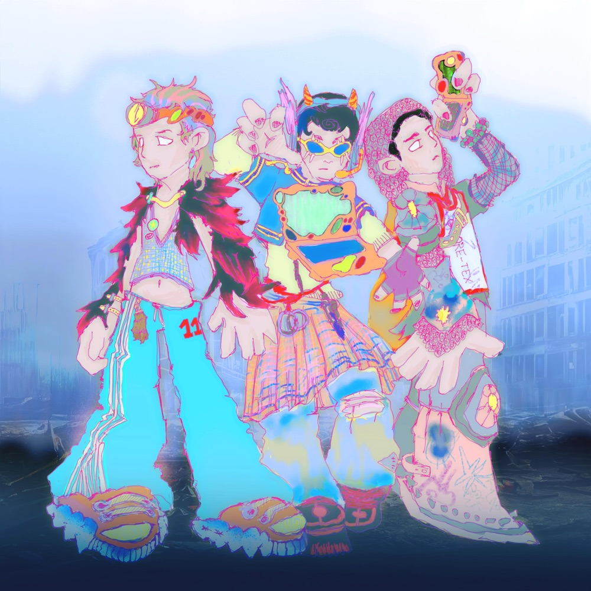

Opravit se
Opravit se

sxilence / releases / features
music
A messy release archive of EPs, edits and remixes, features, somewhere between post-rap, club and crystalline sound design. Music as a way of repairing myself online, and a diary of whether it works.
click covers / open tracks and project pages
Release map


bandcamp: sxilence.bandcamp.com
soundcloud: soundcloud.com/sxilence
instagram: @sxilence6
spotify / apple music: sxilence